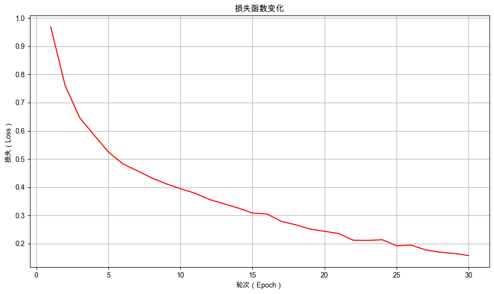

3. 深度学习初探：多分类任务实战#
通过本次任务，你将学会如何使用 PyTorch 构建和训练一个深度神经网络模型，以解决一个实际的多分类问题。
3.1. 任务背景#
自从机器人特调柠檬水成功抓住顾客的味蕾，你的无人糖水铺账户余额便持续攀升。但这这小小的甜头却让你嗅到了更大的风口——生椰系咖啡正在街头蔓延，生椰拿铁、双椰拿铁、烤椰拿铁接连刷屏社交媒体。你迅速跟进，让机器人同步上新这三款饮品。
现实却很快泼来一盆冷水：由于原料相近、口味相似、品质不稳，顾客纷纷反馈“喝不出区别”。你明白，市场要的是鲜明特色，而不是模糊的将就——只有让风味足够突出，顾客才会记住“这就是生椰拿铁”，而不是“好像带点椰子味的咖啡”。
如何破局？灵感倏然而至：既然上次通过模型预测柠檬水评分成效显著，这次何不直接训练一个“风味质检员”？让它像资深品鉴师一样，准确分辨出生椰拿铁、双椰拿铁或烤椰拿铁，并给出对应概率。只要置信度超过 80%，才允许机器人出品；低于这条线，则自动返工调整。这样一来，每一杯都能稳稳锁定其风味核心，不再依靠偶然的口碑。
新的挑战已来，而技术的齿轮，又一次在创新的起点悄然转动。
3.2. 最少必要知识#
深度神经网络
激活函数
交叉熵损失
3.3. 任务鸟瞰#
3.3.1. 任务分析#
本次的任务是训练一个风味质检模型，它能够识别出各种咖啡的类型，并给出相应的概率。

3.3.2. 模型结构#
在机器学习中，任务复杂度直接决定了模型所需具备的能力。本次任务由单输出回归问题拓展为多输出分类问题，不仅输出维度增加，也对输入与输出之间关系的建模能力提出了更高要求。为有效捕捉输入特征与多个输出之间的复杂依赖，模型需要拥有更强大的表示能力。
加深模型深度是增强模型能力的直接策略之一。有多个层相互堆叠的神经网络，也叫深度神经网络（Deep Neural Network，DNN）。深度神经网络可以实现层次化的特征抽象与转换：
浅层网络通常学习基础、局部的特征模式；
深层网络则进一步整合这些基础特征，形成更加复杂和全局的表示。
本次的任务中，模型将采用深度神经网络结构，其结构如下：

本次的模型包含两个层：输入层和输出层。
输入层：接收咖啡的样本数据，并生成相应的特征表示。
输出层：则根据样本的特征表示，生成类型的预测得分。
我们依然遵循以下四个步骤组织本章的内容：数据准备、模型定义、模型训练与模型评估。在正式开始之前，先打印环境的版本号，避免因为环境不同而导致程序不能复现。
3.3.3. 环境版本#
from util import show_version
show_version()
本书愿景：
+------+--------------------------------------------------------+
| Info | 《动手学人工智能》 |
+------+--------------------------------------------------------+
| 作者 | 吾辈亦有感 |
| 哔站 | https://space.bilibili.com/3461565265217538 |
| 定位 | 基于'从零构建'的理念，用实战帮助程序员快速入门大模型。 |
| 愿景 | 若让你的AI学习之路走的更容易一点，我将倍感荣幸！祝好😄 |
+------+--------------------------------------------------------+
环境信息：
+-------------+--------------+------------------------+
| Python 版本 | PyTorch 版本 | PyTorch Lightning 版本 |
+-------------+--------------+------------------------+
| 3.12.12 | 2.9.1 | 2.6.0 |
+-------------+--------------+------------------------+
3.4. 数据准备#
3.4.1. 观察数据#
在模型训练伊始，对数据进行初步审视是至关重要的步骤。我们首先读取训练语料，并随机展示其中的 5 条样本，直观了解数据的结构。
import pandas as pd
# 读取训练集数据
train_data_frame = pd.read_csv('./dataset/coffee_train.csv')
# 随机显示5行数据
train_data_frame.sample(5)
| 椰浆 | 咖啡 | 牛奶 | 糖 | 种类 | |
|---|---|---|---|---|---|
| 31 | 5.4000 | 3.4000 | 1.5000 | 0.4000 | 生椰拿铁 |
| 4 | 5.0000 | 3.6000 | 1.4000 | 0.2000 | 生椰拿铁 |
| 11 | 4.8000 | 3.4000 | 1.6000 | 0.2000 | 生椰拿铁 |
| 34 | 4.9000 | 3.1000 | 1.5000 | 0.2000 | 生椰拿铁 |
| 53 | 6.1000 | 2.9000 | 4.7000 | 1.4000 | 双椰拿铁 |
我们可以看到，每条样本数据中均包含四个明确的输入特征（分别对应椰浆、咖啡、牛奶和糖的含量）以及一个对应的饮品类别标签（生椰拿铁、双椰拿铁或烤椰拿铁）。为便于后续训练模型，需将原始的表格数据转换为 <输入特征, 目标标签ID> 数据对的形式：
{
"input_features": [5.1, 3.5, 1.4, 0.2],
"target_ids": 0
}
其中：
input_features：一个列表，包含了当前咖啡的四个特征数值，这些是模型输入的特征。target_ids：一个整数，代表该咖啡对应的类别编号，作为模型训练的目标。
在先前的项目中，我们手动维护与调度数据。然而，当面对大规模数据集，并需要实现高效批处理、并行加载等复杂需求时，手动管理的方式将变得捉襟见肘，难以维护且效率低下。
PyTorch框架为此提供了优雅的解决方案，封装了 Dataset 和 DataLoader 这两个类是对数据集的抽象封装，能够极大地简化数据准备和批量加载的过程。接下来，我们将学习如何利用这两个类，将我们的饮品特征数据封装成一个规范、高效的数据集。
3.4.2. PyTorch 数据管理#
PyTorch中的 Dataset 和 DataLoader 类是数据加载和处理的核心组件，它们极大地简化了数据准备和批量加载的过程。
Dataset类负责定义数据的组织结构和处理过程，即“如何根据索引获取单个样本”以及“如何将原始数据转化成训练所需的格式”；而
DataLoader则围绕Dataset工作，负责将单个样本组装成批次（batch），并提供打乱、多进程加载等高级功能，使得训练循环更加清晰和高效。
PyTorch 中数据管理的整体思路如图所示：

Dataset类的作用
抽象数据表示：Dataset类提供了一个表示数据集的抽象接口，允许用户自定义如何加载和访问数据。
数据预处理：可以在Dataset类中实现数据的预处理操作，如图像的变换、文本的分词等。
统一数据访问：通过实现__getitem__和__len__方法，使得数据集可以像列表一样被索引，并且可以获取数据集的大小。
DataLoader类的作用
批量加载：自动将数据集中的数据分成小批量，便于模型训练。
数据打乱：在每个训练周期（epoch）开始时，可以随机打乱数据，以减少模型对数据顺序的依赖，提高泛化能力。
并行加载：利用多进程并行加载数据，加速数据准备过程，减少GPU等待数据的时间。
灵活的数据组合：通过collate_fn参数，可以自定义如何将多个样本组合成一个批量，例如对序列数据进行填充。
3.4.3. 自定义数据集#
在此次的任务中我们需要将 csv 中的每一行数据转化为 <输入特征, 目标标签ID> 数据对。转化处理的流程如下图所示：

其中 input_features 表示输入特征，target_ids 表示类别对应的ID。
3.4.3.1. 自定义咖啡分类数据集#
自定义咖啡分类 CoffeeDataset 类，需要继承 torch.utils.data.Dataset，并实现 __init__、__len__和__getitem__方法。
__init__方法：初始化数据集，通常包含样本列表、标签映射等参数。__len__方法：返回数据集的长度，即样本数量。__getitem__方法：根据索引获取指定样本的数据，通常会将数据的转换过程放在这里。
除了实现 __init__、 __len__ 和 __getitem__ 方法，我们还需要添加从CSV文件加载数据的类方法 load_from_csv()，方便直接从数据文件中直接创建数据集对象。
import torch
from torch.utils.data import Dataset
class CoffeeDataset(Dataset):
"""
自定义咖啡数据集类，继承自PyTorch的Dataset基类
用于加载和处理咖啡分类数据
"""
def __init__(self, samples, label_to_id):
"""
初始化数据集
参数:
- samples: 包含特征和标签的样本列表，每个元素是(features, label)的元组
- label_to_id: 标签到ID的映射字典，如果为None则自动创建
"""
self.samples = samples
# 使用提供的标签映射
self.label_to_id = label_to_id
# 创建反向映射(ID到标签)，用于后续将预测结果转换回标签名称
self.id_to_label = {idx: label for label, idx in self.label_to_id.items()}
def __len__(self):
"""
返回数据集的大小(样本总数)
返回:
- 数据集中的样本数量
"""
return len(self.samples)
def __getitem__(self, index):
"""
获取指定索引的样本数据
参数:
- index: 样本索引
返回:
- 包含输入特征和目标标签ID的字典
"""
# 1️⃣ 根据索引获取样本的特征和标签
features, label = self.samples[index]
# 2️⃣ 将标签转换为对应的ID
label_id = self.label_to_id[label]
# 3️⃣ 返回包含输入特征和目标标签ID的字典
return {
"input_features": features, # 输入特征数据
"target_ids": label_id # 目标标签ID
}
@classmethod
def load_from_csv(cls, file_path, label_to_id):
"""
从CSV文件加载数据的类方法
参数:
- file_path: CSV文件路径
返回:
- CoffeeDataset实例
"""
# 使用pandas读取CSV文件并删除包含缺失值的行
data = pd.read_csv(file_path).dropna()
# 存储处理后的样本
samples = []
# 遍历数据中的每一行
for index in range(len(data)):
# 1️⃣ 获取当前行数据
row = data.iloc[index]
# 2️⃣ 提取特征数据(除最后一列外的所有列)，并转换为float32类型
features = row.iloc[:-1].values.astype("float32")
# 3️⃣ 提取标签(最后一列)
label = row.iloc[-1]
# 4️⃣ 将特征和标签作为一个元组添加到样本列表中
samples.append((features, label))
# 创建并返回CoffeeDataset实例
return cls(samples, label_to_id)
3.4.3.2. 加载数据集实例#
使用训练数据文件 coffee_train.csv 和评估数据文件 coffee_val.csv 来创建对应的数据集对象，查看数据集大小。
from pprint import pprint
# 使用 CoffeeDataset 类的 load_from_csv 方法加载咖啡数据集
label_to_id = {"生椰拿铁": 0, "双椰拿铁": 1, "烤椰拿铁": 2}
train_dataset = CoffeeDataset.load_from_csv("./dataset/coffee_train.csv", label_to_id)
val_dataset = CoffeeDataset.load_from_csv("./dataset/coffee_val.csv", label_to_id)
# 使用 pprint 函数打印数据集中的第一个样本，展示其结构和内容
# 这有助于查看数据的格式，包括输入特征(input_features)和目标标签(target_ids)
print(f"数据集样例：{train_dataset[0]}\n")
# 打印训练集和评估集的大小
print(f"训练集大小: {len(train_dataset)}")
print(f"评估集大小: {len(val_dataset)}")
数据集样例：{'input_features': array([5.1, 3.5, 1.4, 0.2], dtype=float32), 'target_ids': 0}
训练集大小: 118
评估集大小: 30
3.4.4. 数据加载器#
DataLoader 是 PyTorch 中用于加载数据的一个重要工具，它提供了一个可迭代的对象，可以方便地访问 Dataset 中的数据，并支持自动批处理、打乱数据、多进程加载等。
有以下主要参数：
dataset: 一个 Dataset 对象，即要加载的数据集。batch_size: 每个批次的大小，默认为 1。shuffle: 是否在每个 epoch 开始时打乱数据，默认为 False。通常训练集设置为 True，验证集/测试集为 False。num_workers: 使用多少个子进程来加载数据，默认为 0，表示在主进程中加载。collate_fn: 如何将多个样本数据拼接成一个批次，默认为 torch 默认的拼接方式。drop_last: 当数据集大小不能被 batch_size 整除时，是否丢弃最后一个不完整的批次。
下面基于自定义的咖啡分类数据集创建数据加载器。这里创建一个批次大小为 5 的训练数据加载器，并打印一个批次的数据。
3.4.4.1. 创建数据加载器#
创建数据加载器的时候需要设置数据集、批次大小、是否打乱数据等参数，训练数据加载器通常会打乱数据，而评估数据加载器则通常不需要打乱数据。
from torch.utils.data import DataLoader
# 设置每个批次的数据量
batch_size = 5
# 创建训练数据的数据加载器，打乱数据
# DataLoader会自动处理数据的批量加载和随机打乱（shuffle=True）
train_dataloader = DataLoader(train_dataset, batch_size=batch_size, shuffle=True)
# 创建评估数据的数据加载器，无需打乱数据
# 评估时通常不需要打乱数据（shuffle=False），以便于结果的复现和分析
val_dataloader = DataLoader(val_dataset, batch_size=batch_size, shuffle=False)
3.4.4.2. 使用数据加载器#
当我们实例化一个 DataLoader 后，它返回的是一个可迭代对象。数据加载器在每次迭代时返回一个批次（batch）的数据。
数据集加载器内部会维护一个索引，每次迭代时，采样器会根据索引从数据集中选择数据，然后使用将单个样本组合成一个 batch。所以我们可以通过下面 for 循环的迭代方式，每次获取一个批次的数据，直到数据遍历一遍为止。
# 使用 Dataloader 打印一个批次的数据
print("使用 Dataloader 打印一个批次的数据：")
input_features = None
target_ids = None
# 遍历训练数据加载器，获取一个批次的数据
for batch in train_dataloader:
# 从批次数据中提取输入特征(input_features)和目标标签(target_ids)
input_features = batch["input_features"]
target_ids = batch["target_ids"]
# 使用pprint美化打印批次数据，sort_dicts=False保持字段顺序
pprint(batch, sort_dicts=False)
# 只打印第一个批次后就跳出循环
break
使用 Dataloader 打印一个批次的数据：
{'input_features': tensor([[4.9000, 3.6000, 1.4000, 0.1000],
[6.1000, 2.6000, 5.6000, 1.4000],
[7.2000, 3.0000, 5.8000, 1.6000],
[6.1000, 2.8000, 4.0000, 1.3000],
[6.9000, 3.1000, 4.9000, 1.5000]]),
'target_ids': tensor([0, 2, 2, 1, 1])}
执行结果和我们的预期一样，每次迭代都会返回一个批次为 5 的数据，其中包含输入特征 input_features 和目标标签 target_ids。组 batch 时， DataLoader 会自动地根据样本中的 key 进行堆叠，所以 input_features 和 target_ids 都被转换成了列表的形式：
input_features：数据形状为 (5, 4)，即每个批次有 5 个数据样本，每个样本有 4 个输入特征target_ids：数据形状为 (5,)，即每个批次有 5 个数据样本，每个样本有 1 个目标标签
批次：用部分对整体的近似估计
这里我们引入了批次（batch）的概念，在训练顾客评分预测模型时，每次训练都会使用全部的数据，虽然使用全量数据的 loss 更能反映模型在整个数据集的性能，但是训练的过程会很慢。因此，在训练过程中，通常会采用小批量（mini-batch）的数据去近似估计整个训练集，即每次只使用一部分数据进行训练，从而平衡训练效率和模型性能。
正式因为这种近似估计的理念，所以通常会将训练数据集进行随机打乱，这样每个训练轮次中批次的数据都不同，可以提高模型的泛化性能。
3.5. 构建模型#
3.5.1. 风味质检模型的模型结构#
本次任务我们需要创建一个用于咖啡分类的模型，学习四种配料与咖啡品类之间的关系。这是一个拥有多个神经网络层和多个输出的模型，其模型的层结构如下：

激活函数：从线性到非线性的飞跃
激活函数是施加在人工神经网络每个神经元输出上的数学函数。它的核心使命是引入非线性。这是神经网络能够学习并逼近任意复杂函数关系的基石。
一个没有激活函数的神经网络，无论有多少层，其整体输出都只是输入数据的线性组合，本质上等价于一个单层的神经网络，能力极其有限。激活函数打破了这种线性束缚，使得神经网络能够拟合曲线、形成复杂的决策边界，从而处理图像识别、自然语言处理等高度非线性的现实问题。
3.5.2. 风味质检模型的代码实现#
定义一个继承自 nn.Module 的 CoffeeClassifier 类，重写模型的 __init__ 和 forward 方法，分别完成模型的初始化和前向计算。
__init__方法：定义模型的参数和层结构，创建一个输入层和一个输出层，不同的层之间使用ReLU激活函数进行非线性映射。forward方法：定义数据在网络中的流动方式，先使用输入层提取输入数据中的隐藏信息，最后通过输出层进行分类预测。
激活函数：ReLU
ReLU，全称为 Rectified Linear Unit，中文译为修正线性单元。它的数学定义非常简单：
也就是说：
如果输入 x > 0，输出就是 x。
如果输入 x ≤ 0，输出就是 0。
from torch import nn
class CoffeeClassifier(nn.Module):
"""
咖啡分类模型，继承自PyTorch的nn.Module基类
这是一个简单的两层全连接神经网络，用于咖啡种类分类任务
"""
def __init__(self, input_size, hidden_size, output_size):
"""
初始化模型结构
参数:
- input_size: 输入特征维度（本项目中为4，即椰浆、咖啡、牛奶、糖的含量）
- hidden_size: 隐藏层神经元数量
- output_size: 输出类别数量（本项目中为3，即生椰拿铁、双椰拿铁、烤椰拿铁）
"""
# 调用父类初始化方法
super(CoffeeClassifier, self).__init__()
# 输入层：将输入特征映射到隐藏层
self.input_layer = nn.Linear(in_features=input_size, out_features=hidden_size)
# 激活函数：引入非线性因素，增强模型表达能力
self.relu = nn.ReLU()
# 输出层：将隐藏层映射到输出类别
self.output_layer = nn.Linear(input_features=hidden_size, out_features=output_size)
def forward(self, input_features):
"""
前向传播函数，定义数据在网络中的流动过程
参数:
- input_features: 输入数据，形状为(batch_size, input_size)
返回:
- out: 模型输出，形状为(batch_size, output_size)
"""
# 输入通过输入层，数据形状变化：(batch_size, hidden_size) → (batch_size, hidden_size)
out = self.input_layer(input_features)
# 经过ReLU激活函数
out = self.relu(out)
# 通过输出层得到最终输出，数据形状变化：(batch_size, hidden_size) → (batch_size, output_size)
out = self.output_layer(out)
# 返回输出结果
return out
3.5.3. 风味质检模型的详细信息#
3.5.3.1. 创建模型实例#
创建咖啡分类模型实例，并打印模型信息：
输入特征维度为
4（椰浆、咖啡、牛奶、糖）隐藏层维度为
10输出类别数为
3（生椰咖啡、双椰咖啡、烤椰咖啡）
"""
创建咖啡分类模型实例：
- 输入特征维度为 4（椰浆、咖啡、牛奶、糖）
- 中间隐藏特征维度为 10
- 输出类别数为 3（生椰咖啡、双椰咖啡、烤椰咖啡）
"""
model = CoffeeClassifier(input_size=4, hidden_size=10, output_size=3)
# 打印模型结构
print(model)
CoffeeClassifier(
(input_layer): Linear(in_features=4, out_features=10, bias=True)
(relu): ReLU()
(output_layer): Linear(in_features=10, out_features=3, bias=True)
)
从打印的模型信息中可以看到，模型由输入层、激活函数和输出层组成，其中：
输入层
input_layer：将输入特征进行组合后映射到隐藏空间，输入特征维度为 4，隐藏特征维度为 10激活函数
relu：使用 ReLU 激活函数，引入非线性因素，增强模型表达能力输出层
output_layer：将隐藏特征映射到输出类别，得到每一个类别的预测得分，隐藏特征维度为 10，输出类别数为 3
3.5.3.2. 查看模型详情#
使用 torchinfo 库查看模型的结构，包括输入大小、输出大小、参数数量和是否可训练。
from torchinfo import summary
# input_data: 输入数据的形状，用于推断模型的输入输出大小
# col_names: 指定显示的列名，包括输入大小、输出大小、参数数量和是否可训练
print("Model Summary:")
print(summary(model, input_data=input_features,
col_names=["input_size", "output_size", "num_params"]))
Model Summary:
===================================================================================================================
Layer (type:depth-idx) Input Shape Output Shape Param #
===================================================================================================================
CoffeeClassifier [5, 4] [5, 3] --
├─Linear: 1-1 [5, 4] [5, 10] 50
├─ReLU: 1-2 [5, 10] [5, 10] --
├─Linear: 1-3 [5, 10] [5, 3] 33
===================================================================================================================
Total params: 83
Trainable params: 83
Non-trainable params: 0
Total mult-adds (Units.MEGABYTES): 0.00
===================================================================================================================
Input size (MB): 0.00
Forward/backward pass size (MB): 0.00
Params size (MB): 0.00
Estimated Total Size (MB): 0.00
===================================================================================================================
从模型摘要详情中，可以看到模型的层结构、输入输出的形状以及参数数量等信息。
3.6. 模型的训练与评估#
模型训练与评估的流程如下：

在训练模型之前，先对模型一次评估，以了解模型在训练前的性能。然后再训练模型，在训练完成后，再对模型进行评估，确认训练是否成功。
3.6.1. 训练前评估#
训练前评估为模型性能建立了初始基准，使得后续的训练进度能够被量化追踪。通过对比训练前后的评估结果，开发者可以清晰看到模型的改进幅度，判断训练是否朝着正确的方向发展。
3.6.1.1. 定义评估函数#
创建一个评估函数 evaluate，用于评估模型在测试数据集上的准确率。评估时会遍历测试数据加载器中的每个批次，计算模型的预测结果，并统计正确预测的样本数和总样本数，最后计算模型在整个测试数据集上的准确率。
评估每个批次具体步骤如下：
从批次数据中获取输入特征和目标标签
模型根据输入特征进行前向计算，得到针对每个样本在每个类型上的预测得分
使用
argmax获取每个样本预测概率最高的类别作为预测结果，即预测结果为预测概率最高的类别的索引比对预测结果和目标标签，统计当前批次中预测正确的样本数，并累加到总正确样本数中
统计并累加当前批次的总样本数，计算总体的准确率
from util import print_red
def evaluate(model, dataloader, device="cpu"):
"""
评估模型在测试数据集上的准确率
参数:
- model: 训练好的模型
- dataloader: 待测试数据集的数据加载器
- device: 运行设备，默认为CPU
返回:
- accuracy: 准确率
- total_correct: 正确预测的样本数
- total_samples: 总样本数
"""
# 将模型设置为评估模式，关闭如dropout等训练时特有的操作
model.eval()
# 将模型移动到指定设备上，只有模型和数据在同一设备上时，才能进行计算
model.to(device)
# 初始化正确预测的样本数和总样本数
total_correct = 0
total_samples = 0
# 关闭梯度计算，因为在评估阶段不需要计算梯度，降低显存开销
with torch.no_grad():
# 遍历测试数据加载器中的每个批次
for batch_data in dataloader:
# 1️⃣ 从批次数据中获取输入特征和目标标签
input_features, target_ids = batch_data["input_features"], batch_data["target_ids"]
# 将输入数据和目标标签移动到指定设备上
input_features, target_ids = input_features.to(device), target_ids.to(device)
# 2️⃣ 模型前向传播，得到输出（未经过argmax处理）
output_logits = model(input_features)
# 3️⃣ 获取每个样本预测概率最高的类别作为预测结果
predicted_ids = torch.argmax(output_logits, dim=1)
# 4️⃣ 统计当前批次中预测正确的样本数
total_correct += (predicted_ids == target_ids).sum().item()
# 5️⃣ 累加当前批次的样本总数
total_samples += target_ids.size(0)
# 计算准确率
accuracy = total_correct / total_samples
# 打印准确率信息
print_red(f"Accuracy: {accuracy:.4f} ({total_correct}/{total_samples})")
# 返回准确率、正确预测的样本数和总样本数
return accuracy, total_correct, total_samples
模型评估模式：model.eval()
评估时，使用
torch.no_grad()关闭梯度计算，可以在推理过程中不存储中间结果，减少显存占用评估时，使用
to(device)将模型和数据移动到指定设备上，只有模型和数据在同一设备上时，才能进行计算
3.6.1.2. 评估模型训练前准确率#
from util import print_table
# 评估模型在评估集上的准确率
accuracy, total_correct, total_samples = evaluate(model, val_dataloader, device="cpu")
# 打印评估结果表格
print_table("🎯 训练前预测准确率", ["总样本数", "正确样本数", "准确率"],
[[total_samples, total_correct, f"{accuracy * 100:.2f}%"]])
Accuracy: 0.3333 (10/30)
🎯 训练前预测准确率：
+----------+------------+--------+
| 总样本数 | 正确样本数 | 准确率 |
+----------+------------+--------+
| 30 | 10 | 33.33% |
+----------+------------+--------+
在模型训练之前，模型预测的准确率为 33.3%，基本上和随机瞎猜的准确率一致，说明模型在训练前没有任何的预测能力。
3.6.2. 训练模型#
风味质检模型训练的流程如下：

风味质检模型是一个多分类模型，模型的预测结果是各个类别的得分，因此使用交叉熵损失函数计算损失。
交叉熵损失函数：CrossEntropyLoss
交叉熵损失函数（Cross-Entropy Loss）是机器学习和深度学习中广泛用于分类任务的一种损失函数，尤其适用于多分类和二分类问题。它衡量的是模型预测的概率分布与真实标签之间的差异。
3.6.2.1. 定义训练循环#
训练深度神经网络的典型训练循环如下：

创建一个训练函数
train_one_batch，用于对一个批次的数据进行训练。创建一个训练函数
train_one_epoch，用于对一个轮次的数据进行训练。创建一个训练函数
train_model，用于对多个轮次的数据进行训练。
3.6.2.1.1. 训练一个批次#
定义 train_one_batch 函数，用于对一个批次的数据进行训练。
前向传播：将输入数据传入模型，得到预测类别的得分（未经过 softmax 处理）
计算损失：使用损失函数计算预测类别与真实类别之间的误差
清空梯度：在反向传播前清空优化器中的梯度缓存，以避免梯度累积
反向传播：计算损失相对于模型参数的梯度
参数更新：使用优化器根据计算出的梯度更新模型参数
返回损失：返回当前批次的损失值，记录训练过程中性能的变化
def train_one_batch(model, optimizer, loss_fn, input_features, target_ids):
model.train() # 将模型设置为训练模式
# 1️⃣ 前向传播：将输入数据传入模型，得到预测输出
output_logits = model(input_features)
# 2️⃣ 计算损失：使用损失函数计算预测值与真实值之间的误差
loss = loss_fn(output_logits, target_ids)
# 3️⃣ 清零梯度：在反向传播前清空优化器中的梯度缓存
optimizer.zero_grad()
# 4️⃣ 反向传播：计算损失相对于模型参数的梯度
loss.backward()
# 5️⃣ 更新参数：根据计算出的梯度更新模型参数
optimizer.step()
# 6️⃣ 返回当前批次的损失值
return loss
3.6.2.1.2. 训练一个轮次#
定义 train_one_epoch 函数，遍历数据加载器中的每一个批次，进行一个轮次的训练。
def train_one_epoch(model, optimizer, loss_fn, train_dataloader, device="cpu", log_interval=50):
epoch_loss = 0 # 累计损失
batch_ids = 0 # 批次计数器
# 遍历训练数据加载器中的每一个批次
for batch_data in train_dataloader:
# 1️⃣ 从批次中获取输入和标签，并移动到指定设备
# input_features: 输入特征数据
# target_ids: 真实标签数据
input_features, target_ids = batch_data["input_features"], batch_data["target_ids"]
input_features, target_ids = input_features.to(device), target_ids.to(device)
# 2️⃣ 调用train_one_batch函数训练一个批次并返回损失
batch_loss = train_one_batch(model, optimizer, loss_fn, input_features, target_ids)
batch_ids += 1 # 增加批次计数器
epoch_loss += batch_loss.item() # 累加当前批次的损失值
# 3️⃣ 按照指定间隔打印损失值，用于监控训练过程
if batch_ids % log_interval == 0:
print(f"Batch {batch_ids}, loss -> {batch_loss.item()}")
# 计算并返回该epoch的平均损失
return epoch_loss / len(train_dataloader)
3.6.2.1.3. 训练多个轮次#
定义 train_model 函数，对模型进行多轮训练。该函数将：
循环执行指定数量的训练轮次（epoch）
记录每个epoch的平均损失值
按设定间隔进行模型评估
监控模型性能变化趋势
在训练过程中，系统会定期对模型在验证集上的表现进行评估，便于实时观察模型的学习效果和性能提升情况。
def train_model(num_epochs, model, optimizer, loss_fn, train_dataloader, val_dataloader, device="cpu",
log_interval=50, val_interval=3):
"""
训练模型
Returns: 包含训练损失和评估准确率的列表。
"""
train_losses = [] # 存储每个 epoch 的训练损失
val_accuracies = [] # 存储每个评估点的准确率
# 循环执行指定数量的训练轮次(epoch)
for epoch in range(num_epochs):
# 打印当前轮次信息
print(">" * 30, f"Epoch {epoch + 1} / {num_epochs}", "<" * 30)
# 1️⃣ 调用 train_one_epoch 函数训练一个完整的 epoch，返回该 epoch 的平均损失值
epoch_loss = train_one_epoch(model, optimizer, loss_fn, train_dataloader, device=device,
log_interval=log_interval)
# 2️⃣ 将当前 epoch 的损失信息保存到 train_losses 列表中
train_losses.append({
"epoch": epoch + 1, # epoch编号
"loss": epoch_loss # 平均损失值
})
# 3️⃣ 定期评估模型性能：每隔 eval_interval 轮或者在最后一轮进行评估
if (epoch + 1) % val_interval == 0 or epoch == num_epochs - 1:
# 调用 evaluate 函数评估模型在验证集上的准确率
accuracy, total_correct, total_samples = evaluate(model, val_dataloader, device="cpu")
# 将评估结果保存到 eval_accuracies 列表中
val_accuracies.append({
"epoch": epoch + 1, # epoch编号
"总样本数": total_samples, # 验证集总样本数
"正确样本数": total_correct, # 预测正确的样本数
"准确率": accuracy # 准确率
})
# 返回训练过程中的损失记录和评估结果
return train_losses, val_accuracies
3.6.2.2. 启动训练循环#
定义好了训练方法后，可以开始训练模型了。训练模型需要以下步骤：
加载数据集：加载训练集和验证集
创建数据加载器：设置批处理大小为
20，创建训练数据加载器和评估数据加载器创建模型实例：
input_size=4、hidden_size=10、num_classes=3初始化模型训练组件：损失函数和优化器
损失函数：因为此任务为分类任务，使用交叉熵损失函数（CrossEntropyLoss）
优化器：使用 Adam 优化器优化模型参数，学习率为
0.01
执行训练循环：调用
train_model函数进行30轮训练，每3轮进行一次评估，每50个批次记录一次训练损失。
# 设置 GPU 设备类型
# 检查是否有可用的CUDA设备(GPU)
if torch.cuda.is_available():
device = "cuda"
# 如果没有CUDA设备，检查是否有可用的MPS设备(Mac上的GPU加速)
elif torch.backends.mps.is_available():
device = "mps"
# 如果都没有，则使用CPU
else:
device = "cpu"
# 打印当前使用的设备类型
print(f"Using device: {device}")
# 1️⃣ 加载数据集
label_to_id = {"生椰拿铁": 0, "双椰拿铁": 1, "烤椰拿铁": 2}
train_dataset = CoffeeDataset.load_from_csv("./dataset/coffee_train.csv", label_to_id)
val_dataset = CoffeeDataset.load_from_csv("./dataset/coffee_val.csv", label_to_id)
# 2️⃣ 创建数据加载器
# 设置批处理大小
batch_size = 20
# 创建训练数据加载器，shuffle=True表示每个epoch打乱数据顺序
train_dataloader = DataLoader(train_dataset, batch_size=batch_size, shuffle=True)
# 创建评估数据加载器，shuffle=False表示不打乱数据顺序
val_dataloader = DataLoader(val_dataset, batch_size=batch_size, shuffle=False)
# 3️⃣ 创建新的咖啡分类模型实例
model = CoffeeClassifier(input_size=4, hidden_size=10, output_size=3)
# 4️⃣ 设置训练轮数
num_epochs = 30
# 5️⃣ 开始训练模型
# model: 要训练的模型
# optimizer: 优化器，使用Adam优化器，学习率为0.01
# loss_fn: 损失函数，使用交叉熵损失函数
# train_dataloader: 训练数据加载器
# val_dataloader: 评估数据加载器
# device: 设备类型，这里设置为"cpu"
train_losses, eval_accuracies = train_model(num_epochs, model=model,
optimizer=torch.optim.Adam(model.parameters(), lr=0.01),
loss_fn=nn.CrossEntropyLoss(),
train_dataloader=train_dataloader, val_dataloader=val_dataloader,
device="cpu")
Using device: mps
>>>>>>>>>>>>>>>>>>>>>>>>>>>>>> Epoch 1 / 30 <<<<<<<<<<<<<<<<<<<<<<<<<<<<<<
>>>>>>>>>>>>>>>>>>>>>>>>>>>>>> Epoch 2 / 30 <<<<<<<<<<<<<<<<<<<<<<<<<<<<<<
>>>>>>>>>>>>>>>>>>>>>>>>>>>>>> Epoch 3 / 30 <<<<<<<<<<<<<<<<<<<<<<<<<<<<<<
Accuracy: 0.7333 (22/30)
>>>>>>>>>>>>>>>>>>>>>>>>>>>>>> Epoch 4 / 30 <<<<<<<<<<<<<<<<<<<<<<<<<<<<<<
>>>>>>>>>>>>>>>>>>>>>>>>>>>>>> Epoch 5 / 30 <<<<<<<<<<<<<<<<<<<<<<<<<<<<<<
>>>>>>>>>>>>>>>>>>>>>>>>>>>>>> Epoch 6 / 30 <<<<<<<<<<<<<<<<<<<<<<<<<<<<<<
Accuracy: 0.7000 (21/30)
>>>>>>>>>>>>>>>>>>>>>>>>>>>>>> Epoch 7 / 30 <<<<<<<<<<<<<<<<<<<<<<<<<<<<<<
>>>>>>>>>>>>>>>>>>>>>>>>>>>>>> Epoch 8 / 30 <<<<<<<<<<<<<<<<<<<<<<<<<<<<<<
>>>>>>>>>>>>>>>>>>>>>>>>>>>>>> Epoch 9 / 30 <<<<<<<<<<<<<<<<<<<<<<<<<<<<<<
Accuracy: 0.9667 (29/30)
>>>>>>>>>>>>>>>>>>>>>>>>>>>>>> Epoch 10 / 30 <<<<<<<<<<<<<<<<<<<<<<<<<<<<<<
>>>>>>>>>>>>>>>>>>>>>>>>>>>>>> Epoch 11 / 30 <<<<<<<<<<<<<<<<<<<<<<<<<<<<<<
>>>>>>>>>>>>>>>>>>>>>>>>>>>>>> Epoch 12 / 30 <<<<<<<<<<<<<<<<<<<<<<<<<<<<<<
Accuracy: 0.9667 (29/30)
>>>>>>>>>>>>>>>>>>>>>>>>>>>>>> Epoch 13 / 30 <<<<<<<<<<<<<<<<<<<<<<<<<<<<<<
>>>>>>>>>>>>>>>>>>>>>>>>>>>>>> Epoch 14 / 30 <<<<<<<<<<<<<<<<<<<<<<<<<<<<<<
>>>>>>>>>>>>>>>>>>>>>>>>>>>>>> Epoch 15 / 30 <<<<<<<<<<<<<<<<<<<<<<<<<<<<<<
Accuracy: 0.9667 (29/30)
>>>>>>>>>>>>>>>>>>>>>>>>>>>>>> Epoch 16 / 30 <<<<<<<<<<<<<<<<<<<<<<<<<<<<<<
>>>>>>>>>>>>>>>>>>>>>>>>>>>>>> Epoch 17 / 30 <<<<<<<<<<<<<<<<<<<<<<<<<<<<<<
>>>>>>>>>>>>>>>>>>>>>>>>>>>>>> Epoch 18 / 30 <<<<<<<<<<<<<<<<<<<<<<<<<<<<<<
Accuracy: 1.0000 (30/30)
>>>>>>>>>>>>>>>>>>>>>>>>>>>>>> Epoch 19 / 30 <<<<<<<<<<<<<<<<<<<<<<<<<<<<<<
>>>>>>>>>>>>>>>>>>>>>>>>>>>>>> Epoch 20 / 30 <<<<<<<<<<<<<<<<<<<<<<<<<<<<<<
>>>>>>>>>>>>>>>>>>>>>>>>>>>>>> Epoch 21 / 30 <<<<<<<<<<<<<<<<<<<<<<<<<<<<<<
Accuracy: 1.0000 (30/30)
>>>>>>>>>>>>>>>>>>>>>>>>>>>>>> Epoch 22 / 30 <<<<<<<<<<<<<<<<<<<<<<<<<<<<<<
>>>>>>>>>>>>>>>>>>>>>>>>>>>>>> Epoch 23 / 30 <<<<<<<<<<<<<<<<<<<<<<<<<<<<<<
>>>>>>>>>>>>>>>>>>>>>>>>>>>>>> Epoch 24 / 30 <<<<<<<<<<<<<<<<<<<<<<<<<<<<<<
Accuracy: 1.0000 (30/30)
>>>>>>>>>>>>>>>>>>>>>>>>>>>>>> Epoch 25 / 30 <<<<<<<<<<<<<<<<<<<<<<<<<<<<<<
>>>>>>>>>>>>>>>>>>>>>>>>>>>>>> Epoch 26 / 30 <<<<<<<<<<<<<<<<<<<<<<<<<<<<<<
>>>>>>>>>>>>>>>>>>>>>>>>>>>>>> Epoch 27 / 30 <<<<<<<<<<<<<<<<<<<<<<<<<<<<<<
Accuracy: 0.9667 (29/30)
>>>>>>>>>>>>>>>>>>>>>>>>>>>>>> Epoch 28 / 30 <<<<<<<<<<<<<<<<<<<<<<<<<<<<<<
>>>>>>>>>>>>>>>>>>>>>>>>>>>>>> Epoch 29 / 30 <<<<<<<<<<<<<<<<<<<<<<<<<<<<<<
>>>>>>>>>>>>>>>>>>>>>>>>>>>>>> Epoch 30 / 30 <<<<<<<<<<<<<<<<<<<<<<<<<<<<<<
Accuracy: 1.0000 (30/30)
优化器：Adam
Adam 是一个集大成者的优化算法，通过自适应地调整每个参数的学习率并结合动量，实现了快速且稳定的收敛。虽然在某些任务上 SGD 可能具有最终的泛化优势，但 Adam/AdamW 因其卓越的易用性和强大的默认性能，已成为深度学习实践中的主力优化器。
3.6.2.2.1. 训练过程可视化#
绘制训练过程中损失值的变化曲线，更直观地观察损失值在训练过程中的变化趋势。
from util import plot_training_loss
plot_training_loss(train_losses)

从训练日志中可以看出随着训练的进行，损失值不断下降，表示模型预测准确性不断提高。
3.6.2.2.2. 查看模型评估记录#
查看训练过程中的评估结果，更直观地观察模型在验证集上的表现。
from util import show_table
print("Eval Accuracies:")
show_table(eval_accuracies)
Eval Accuracies:
| epoch | 总样本数 | 正确样本数 | 准确率 | |
|---|---|---|---|---|
| 0 | 3 | 30 | 22 | 0.7333 |
| 1 | 6 | 30 | 21 | 0.7000 |
| 2 | 9 | 30 | 29 | 0.9667 |
| 3 | 12 | 30 | 29 | 0.9667 |
| 4 | 15 | 30 | 29 | 0.9667 |
| 5 | 18 | 30 | 30 | 1.0000 |
| 6 | 21 | 30 | 30 | 1.0000 |
| 7 | 24 | 30 | 30 | 1.0000 |
| 8 | 27 | 30 | 29 | 0.9667 |
| 9 | 30 | 30 | 30 | 1.0000 |
3.6.3. 训练后评估#
from util import print_table
accuracy, total_correct, total_samples = evaluate(model, val_dataloader, device="cpu")
print_table("🎯 训练前预测准确率", ["总样本数", "正确样本数", "准确率"],
[[total_samples, total_correct, f"{accuracy * 100:.2f}%"]])
Accuracy: 1.0000 (30/30)
🎯 训练前预测准确率：
+----------+------------+---------+
| 总样本数 | 正确样本数 | 准确率 |
+----------+------------+---------+
| 30 | 30 | 100.00% |
+----------+------------+---------+
从评估结果中可以看出，训练前的模型的准确率是 33.3%，训练后的准确率是 100%，说明模型训练非常有效。
3.7. 使用模型进预测#
模型训练完成后，可以使用训练好的模型对新的数据进行预测。模型预测的步骤如下：

在预测阶段和训练时不太一样，预测阶段需要使用 softmax() 将模型预测的类型得分转换为概率，并使用 argmax() 选择概率最大的类别 ID 作为预测结果。预测阶段不需要进行反向传播，因此可以设置 torch.no_grad() 来关闭梯度计算，提高预测效率。
3.7.1. 定义预测单个样本的函数#
创建一个 predict_sample 函数，该函数接收一个模型实例、一个样本特征向量和类别标签的映射表。模型会对该样本进行预测得到预测的类别 ID后，通过类别 ID 获取对应的类别名称，并返回预测的类别名称和对应的预测概率。
def predict_sample(model, sample_features, id_to_label):
"""
使用训练好的模型对单个样本进行预测
参数:
- model: 训练好的模型
- sample_features: 样本特征，如 [椰浆, 咖啡, 牛奶, 糖]
- id_to_label: 标签映射
返回:
- predicted_label: 预测的类别名称
- predicted_probabilities: 各类别的预测概率
"""
# 将模型设置为评估模式，关闭dropout等训练时特有的操作
model.eval()
# 转换输入特征为tensor
input_features_tensor = torch.tensor(sample_features, dtype=torch.float32)
# 添加批次维度，因为模型期望输入是批量数据
# unsqueeze(0)在第0维添加一个维度，例如 shape [4] -> [1, 4]
input_features_tensor = input_features_tensor.unsqueeze(0)
# 模型预测
with torch.no_grad(): # 关闭梯度计算，节省内存并提高推理速度
# 前向传播得到模型输出
output_logits = model(input_features_tensor)
# 对输出应用softmax函数，将logits转换为概率分布
probabilities = torch.softmax(output_logits, dim=1)
# 获取概率最高的类别作为预测类别的ID
predicted_id = torch.argmax(output_logits, dim=1)
# 获取预测类别名称：通过id_to_label字典将类别ID转换为类别名称
predicted_label = id_to_label[predicted_id.item()]
# 返回预测标签和概率分布列表
# squeeze()移除多余的维度，tolist()将tensor转换为Python列表
return predicted_label, probabilities.squeeze().tolist()
unsqueeze 和 squeeze
在深度学习模型的预测（inference）和解码（decoding）过程中，unsqueeze 和 squeeze 是两个非常常见的张量操作，主要用于调整维度以匹配模型输入/输出的要求。
unsqueeze(dim)：在指定维度 dim 上增加一个大小为 1 的维度。
squeeze(dim)：移除大小为 1 的维度（若未指定 dim，则移除所有大小为 1 的维度）。
x = torch.tensor([1, 2, 3]) # shape: [3]
x_unsqueezed = x.unsqueeze(0) # shape: [1, 3]
x_squeezed = x_unsqueezed.squeeze(0) # shape: [3]
训练时通常使用 批量数据（batch）进行训练，但在推理时，可能只处理一个样本，这时需要手动添加 batch 维度。模型输出中也包含着不必要的 batch 维度，需要 squeeze 来还原数据的维度。
3.7.2. 使用训练好的模型进行预测#
模型训练完成后，可以使用训练好的模型对新的数据进行预测，查看模型的泛化能力。
创建 3 个新样本，每个样本包含[椰浆, 咖啡, 牛奶, 糖]四个特征以及对应的类别，使用模型进行预测，查看模型的预测结果是否正确。
from util import print_classification_results
# 初始化各类别的标签到ID的映射关系（需要和训练模型时一致）
label_to_id = {
"生椰拿铁": 0,
"双椰拿铁": 1,
"烤椰拿铁": 2
}
id_to_label = {v: k for k, v in label_to_id.items()}
# 1️⃣ 假设我们有几个新的咖啡样本，每个样本包含[椰浆, 咖啡, 牛奶, 糖]四个特征
sample_features = [[4.4, 2.9, 1.4, 0.2], [6, 2.9, 4.5, 1.5], [6.9, 3.2, 5.7, 2.3]]
# 定义这些样本对应的真实标签
true_labels = ["生椰拿铁", "双椰拿铁", "烤椰拿铁"]
# 将真实标签转换为对应的ID
true_label_ids = [label_to_id[label] for label in true_labels]
# 2️⃣ 使用训练好的模型对每个样本进行预测
predictions = [] # 存储预测的标签名称
probabilities = [] # 存储各类别的预测概率
for i, sample_feature in enumerate(sample_features):
# 对单个样本进行预测，返回预测标签和各类别概率
predicted_label, probabilities_label = predict_sample(model, sample_feature, id_to_label)
predictions.append(predicted_label) # 添加预测标签
probabilities.append(probabilities_label) # 添加概率分布
# 3️⃣ 将预测的标签名称转换为对应的ID
predicted_label_ids = [label_to_id[prediction] for prediction in predictions]
# 4️⃣ 输出最终的分类预测结果，包括准确率统计和详细对比
print_classification_results(sample_features, true_label_ids, predicted_label_ids, probabilities, id_to_label)
🎯 分类预测结果 (准确率: 3/3 = 100.00%)：
+----------------------+----------+----------+----------+------+
| 输入 | 真实标签 | 预测标签 | 最高概率 | 标记 |
+----------------------+----------+----------+----------+------+
| [4.4, 2.9, 1.4, 0.2] | 生椰拿铁 | 生椰拿铁 | 0.9814 | ☑ |
| [6, 2.9, 4.5, 1.5] | 双椰拿铁 | 双椰拿铁 | 0.7911 | ☑ |
| [6.9, 3.2, 5.7, 2.3] | 烤椰拿铁 | 烤椰拿铁 | 0.8515 | ☑ |
+----------------------+----------+----------+----------+------+
从结果中我们可以看到，模型在所有测试样本上都做出了正确预测。但是，对每一个样本模型的置信度仍然存在差异：
样本 1 (生椰拿铁): 预测概率
0.9814，置信度很高样本 2 (双椰拿铁): 预测概率
0.7911，置信度中等样本 3 (烤椰拿铁): 预测概率
0.8515，置信度较高
样本 2 的预测概率相对较低（0.7911），说明模型对这个样本的分类相对不够确定，表示模型对预测的结果不够自信。如果置信度低于阈值（0.8），我们可以认为这个样本偏离了我们的训练数据集，也就是说这杯咖啡未通过模型的质检，未达到品控标准。
3.8. 本章小结#
本章我们成功地从回归任务拓展到了分类任务，并使用 PyTorch 训练了我们的第一个深度神经网络模型。我们了解了加深神经络模型的层可以提高模型的表示能力，但需要在堆叠的层之间添加激活函数来增加非线性能力。在这个过程中，我们学会了使用 Dataset 和 DataLoader 自定义数据集来高效地组织数据。另外，训练多分类模型时，需要使用交叉熵损失函数 CrossEntropyLoss 来计算损失；推理解码时使用 Softmax 函数将输出转换为概率分布。下一章，我们将在此基础上，探索如何利用更高级的框架来进一步优化我们的工程实践。